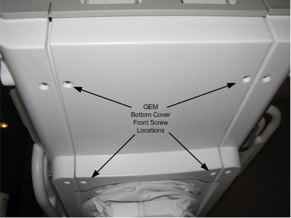

Operating Documentation
Direction 5670006, Rev# 1
Discovery MR750w GEM Service Methods
Module Version 5.0, Version Date 7/8/11
Operating Documentation |
| Required Persons | Preliminary Reqs | Procedure | Finalization |
|---|---|---|---|
| 1 | 75 mins |
On each side of the Patient Table along the top edge, there are Touch and Go (T and G) strips that run the length of the Table. A closer look at the T and G strips internally shows that each side is made up of three individual strips connected by jumpers. If one of the strips fails, you replace only that specific strip. In other words, you do not have to replace the entire side. Be certain of which strip you are replacing since each one has a separate part number. See the Replacement Parts section below for all part numbers.
This procedure also covers replacing the Table Side Bumpers. The convenience of replacing any of the three Side Bumpers per either side of the Table is that a Touch and Go strip is contained within a Side Bumper. So whether you need to replace a Touch and Go strip or a Side Bumper, you need to remove the Touch and Go strip from its respective Side Bumper anyway, thus one procedure covers both items.
| Item | Qty | Effectivity | Part# | Manufacturer | |
|---|---|---|---|---|---|
| 5/32 inch Allen wrench | 1 | - | - | - | |
| 3/8 inch open end wrench | 1 | - | - | - | |
| Medium Phillips screwdriver | 1 | - | - | - | |
| Item | Qty | Effectivity | Part# | Manufacturer | |
|---|---|---|---|---|---|
| Front RH T and G Assembly | 1 | - | See FRU manual. | - | |
| Arm Board T and G Assembly | 1 | - | See FRU manual. | - | |
| Rear RH T and G Assembly | 1 | - | See FRU manual. | - | |
| Front LH T and G Assembly | 1 | - | See FRU manual. | - | |
| Arm Board T and G Assembly | 1 | - | See FRU manual. | - | |
| Rear LH T and G Assembly | 1 | - | See FRU manual. | - | |
| Front RH Side Bumper | 1 | - | See FRU manual. | - | |
| Arm Board Bumper (use for RH or LH side) | 1 | - | See FRU manual. | - | |
| Rear RH Side Bumper | 1 | - | See FRU manual. | - | |
| Front LH Side Bumper | 1 | - | See FRU manual. | - | |
| Rear LH Side Bumper | 1 | - | See FRU manual. | - | |
Undock the Patient Table and move it out of the magnet room.
Illustration 1: Table Covers

At the front of the Table, remove the Front Bottom Cover (4 screws). See illustration below.
Illustration 2: Front Bottom Cover

At the foot of the Table, remove the Rear Bottom Cover (located above the pedals, 4 screws).
Remove the screws from the top of the bellows on the side being worked on (five screws on each side holds the Upper Bellows to the bottom side of the Table). Do not remove the bellows from the Table; leave it in the down position.
(Skip this step for the OR-Compatible Table). To remove the Table handle, at the foot of the Table rotate the handle down by pushing the silver button on the left side of the Table to release the Table. Use a 5/32 inch Allen wrench to remove hex socket screws, one on each side, from the Table handle. See illustration below. Push the silver button again to rotate the handle back up to allow the handle to slip off.
Illustration 3: Table Handle in Down Position

| NOTE: | Side Cover Removal Strategy. determine
which T and G Strip or Side Bumper to replace, and then pay attention
to the following:
|
On the bottom right or left side of the Table, remove appropriate Side Cover screws and then slide the Side Cover down. See illustration below.
Illustration 4: Side Cover, Bottom Side Screws

(Skip this step for the OR-Compatible Table.) Disconnect the connection(s) from the touch and go strip/side bumper assembly that is being replaced.
Use a 3/8 inch open end wrench to remove nuts and washers from the appropriate front, middle, or rear T and G Strip/Side Bumper studs.
Illustration 5: Side Cover, Side Bumper, T and G Strip Diagram

Slide the T and G Strip/Side Bumper assembly away from the Table chassis. See Illustration 5.
Disassemble the T and G Strip from the Side Bumper and replace desired part.
Reverse Steps 7-10 to reassemble T and G Strip(s), Side Bumper(s), and Table Side Cover(s).
(Skip this step for the OR-Compatible Table.) Dock the Table and ensure that the touch and go strips are working correctly.
Reinstall the Table side covers.
Replace Table Handle screws, one on each side using a 5/32 inch Allen wrench.
Reattach the top side Bellows screws to bottom side of Table.
No finalization steps.